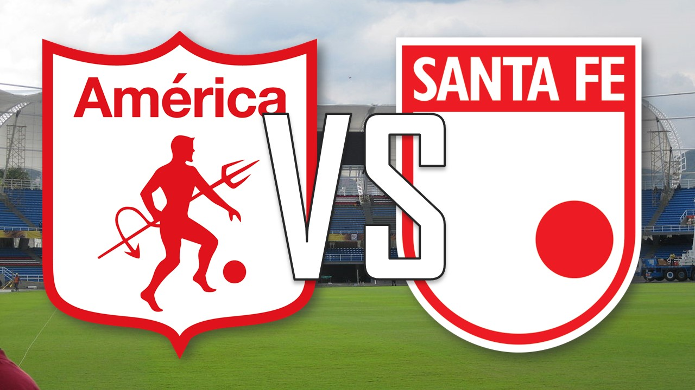
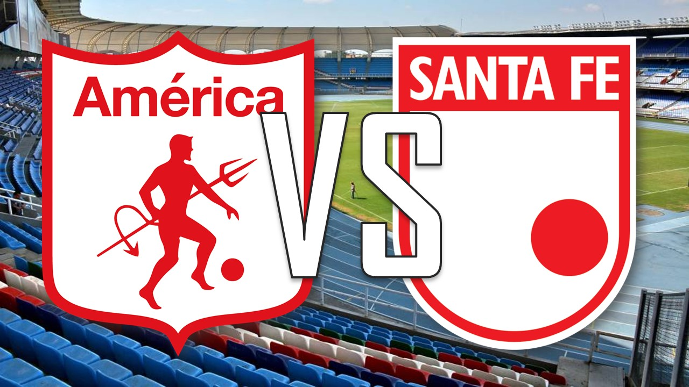
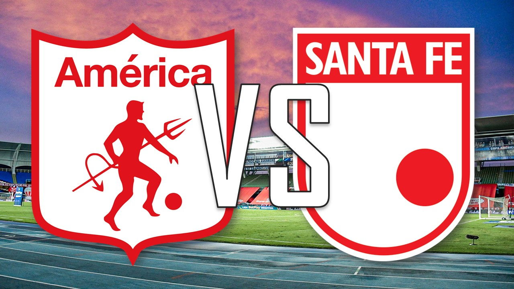
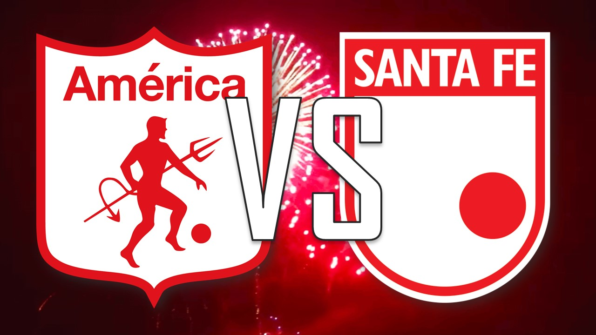
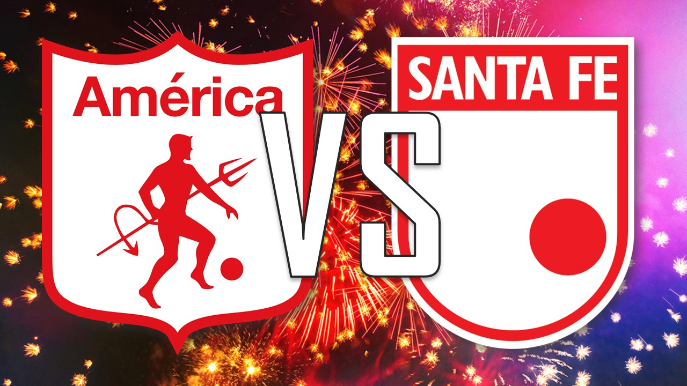
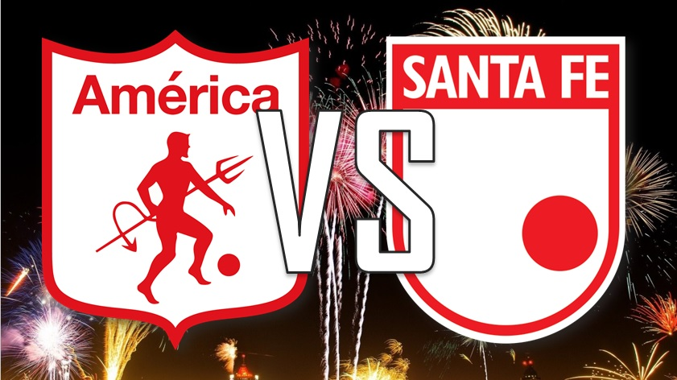

Opción 1

Canal WIN+
Esta opción demora en cargar y está llena de publicidad.
Opción 2

Canal Win Sports +
Esta opción demora en cargar, está llena de publicidad y se congela constantemente.
Opción 3

Canal 6
Esta opción es nueva y desconozco su funcionamiento.
Opción 4

Canal Ganador
Esta opción es nueva y desconozco su funcionamiento.
Opción 5

Canal Fútbol Libre
Esta opción demora en cargar y está llena de publicidad.
Opción 6

Cuenta de Instagram @donjosealejo
Esta opción permite ver el partido desde la cuenta de instagram @donjosealejo debe estar siguiendo esta cuenta para visualizar el encuentro.